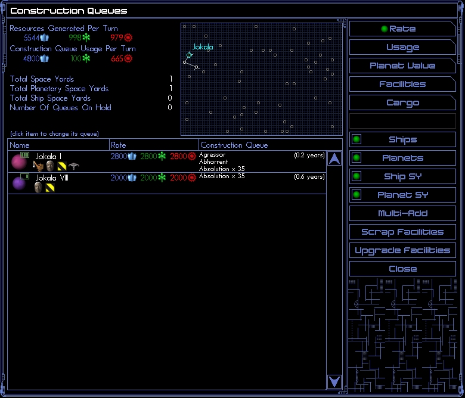

Construction Queues Window

|
This window allows you to view all of the construction queues in your empire and modify them. All planets contain a construction queue for building new facilities and units. If a planet or a ship contains a space yard, then it can build ships. See Construction Queues for more details. |
||
| Statistics | This region displays statistics about the amount of resources your empire generates per turn, how many your resources your construction queues use per turn, and how many Space Yards your empire has. | |
| Quadrant Map | This map displays your entire view of the quadrant. When you move your pointer over a construction queue in the list, its location will be displayed here. | |
| Construction Queue List |
This is a list of all of the construction queues throughout your empire. The main values that are displayed are the name of the ship or planet containing the construction queue, how many resources per turn this construction queue can process, and a list of the first three items within the queue. If you click on a construction queue in the list, the Set Construction Queue window will be displayed. This window will allow you to select the items for this specific construction queue. |
| Rate | This selection displays the maximum rate at which each construction queue can use resources. | |
| Usage | This selection displays the actual usage in resources for this construction queue this turn. | |
| Planet Value | This displays the value of the planet that this construction queue sits on (if there is one). | |
| Facilities | This displays the number of facilities that are on this planet (if this is a planet). | |
| Cargo | This displays the amount of cargo space available on this ship or planet. | |
| Ships | This selection adds all of your ships with construction queues to the list. | |
| Planets | This selection adds all of your planets with construction queues to the list. | |
| Ship SY | This selection adds all of your ships with space yards to the list. | |
| Planet SY | This selection adds all of your planets with space yards to the list. | |
| Multi-Add | Selecting this button will allow you to add Ships or Units to many construction queues at a time. First, you must select the construction queues in the list by holding the shift button down and left-clicking on them. This will highlight them with a green arrow. Next press the Multi-Add button and the Set Construction Queue window will be displayed. From this window you can add items to the list and when you close the window, those items will be added to the queues of all of the construction queues that you selected. | |
| Scrap Facilities | Selecting this button will allow you to scrap the facilities on one of your planets. When you press the button, a list will be displayed which allows you to select which of the currently visible planets you wish to use. After selecting a planet, the Scrap Facilities window will be displayed to allow you to choose the specific facilities to scrap. | |
| Upgrade Facilities | Selecting this button will cause all of the queues throughout your empire to add upgrade items. Each queue will examine what facilities are present on the planet, and then add upgrade items for any facilities that can be upgraded. Obviously, this function will only work on planet construction queues. | |
| Close | This will close the window, and return you to the Main Window. |
| None |